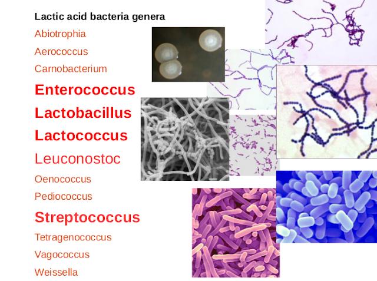
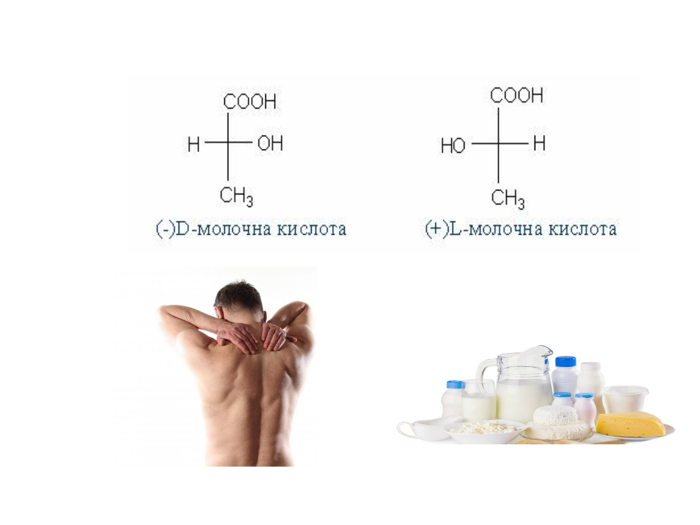

Чому продукти – КИСЛОМОЛОЧНІ, а бактерії – МОЛОЧНОКИСЛІ?
Найперше, що приходить в голову при слові "кисломолочні" – "кисле молоко". Кисле молоко – то продукт, правда ж? Тому – кисломолочні продукти.
...І що б Ви робили без такої цінної інформації? :)

А при слові "молочнокислі" ? Правильно! ... "Молочна кислота"!
А звідси випливає, як любив говорити один гарний математик, що саме це їх – молочнокислих бактерій, і об'єднує!
І справді, молочнокислі бактерії – не систематична група мікроорганізмів, а фізіологічна : головне, що їх поєднує – здатність ферментувати цукри із утворенням молочної кислоти. І можуть таке витворяти насправді дуже багато всяких мікробів, але на слуху в нас лише деякі, імена яких чинно красуються на етикетках деяких, хм, кисломолочних продуктів, заквасок та пробіотичних препаратів.

Любителі пообійматися зі штангою можуть скептично поморщити носа при згадці про молочну кислоту. Але згадуєм страшну біохімію – молочна кислота буває в двох формах – ізомерах. По-простому – це наче і ті самі речовини, але не зовсім. У них однаковий склад, але форма молекули дзеркально відображена, а також – різна біологічна дія. Таке собі задзеркалля на нанорозмірному рівні. Та молочна кислота, через яку лижники-початківці не можуть наступного дня по сходах спускатися – D (-) ізомер, а та, яка в пакеті кефіру – L(+) ізомер.

Тож нехай продукти будуть кисломолочними, бактерії - молочнокислими, а молочна кислота - в потрібній формі і в потрібних місцях! :)